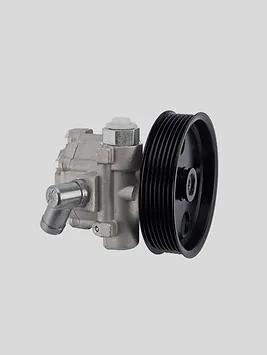

Power Steering Pump

Ціна: $130
Країна: Германія
Постачальник: MOTORKS
Кількість в наявності: 40
Опис:
Насос гідропідсилювача керма - це важливий компонент автомобільної системи
керування, який відповідає за надання потрібного тиску для роботи системи гідропідсилювання керма.
Цей насос дозволяє водію легко і комфортно керувати автомобілем, зменшуючи зусилля на кермо.
Особливості:
Підвищена ефективність керування: Насос гідропідсилювача керма забезпечує плавне і легке
керування автомобілем, зменшуючи зусилля водія на кермо і покращуючи маневреність
автомобіля.
Стабільність роботи: Виготовлений з високоякісних матеріалів, цей насос відзначається
надійністю і довговічністю, що забезпечує стабільну роботу системи гідропідсилювання керма
протягом тривалого часу.
Мінімальний рівень шуму: Високоточне виготовлення насоса забезпечує мінімальний рівень шуму
під час роботи, що забезпечує комфортну їзду для водія і пасажирів.
Характеристики:
Матеріал: Високоякісний метал та пластик
Робочий тиск: Залежно від конкретної моделі та виробника
Сумісність: Підходить для широкого спектру автомобілів різних марок і моделей.